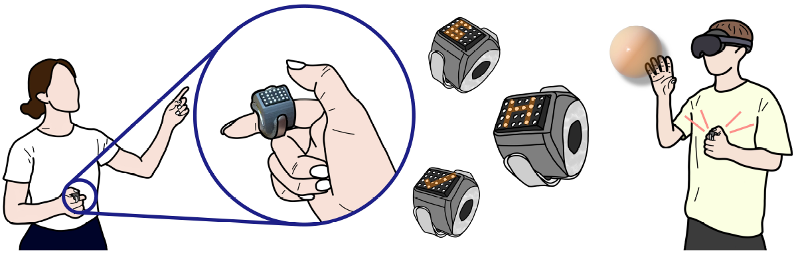
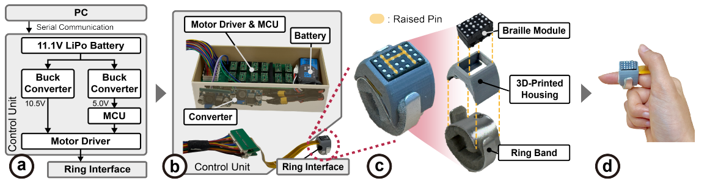
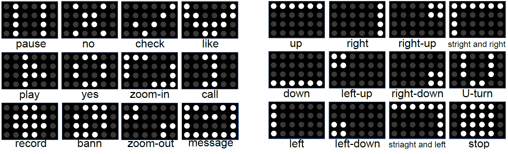
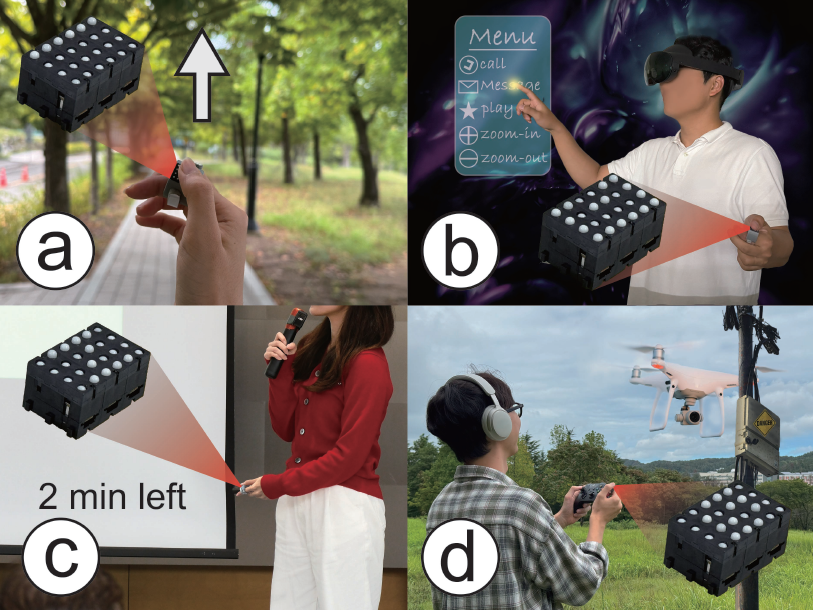

Accesibilidad
Sirve para diseñar interfaces que no dependan únicamente de la información visual. Facilita el acceso a la información para personas con discapacidad visual.
CHI 2026

HaRing es un prototipo de anillo háptico presentado en la conferencia CHI 2026. Sus autores son Suheon Nam, Juhyung Son, Seungmoon Choi y Chaeyong Park, investigadores vinculados a POSTECH y Korea University.
El anillo se lleva en el dedo índice y tiene 24 pequeños puntos móviles, colocados en una matriz de 4x6. Al pasar el pulgar por esa superficie, la persona puede notarlos.
Conviene aclarar que, por ahora, se trata de un dispositivo de investigación, todavía no se comercializa.
El funcionamiento es bastante fácil de entender. El mecanismo hace que algunos puntos sobresalgan y otros no, formando un relieve que se puede reconocer al tocarlo.

Por ejemplo, una determinada combinación de puntos puede indicar que hay que girar a la derecha. Otra puede representar la orden de reproducir o pausar un contenido. No es necesario que el anillo tenga una pantalla: la información llega a través del contacto con el dedo.
HaRing propone una forma distinta de comunicarnos con un dispositivo. Normalmente recibimos información mirando una pantalla, escuchando un sonido o notando una vibración.
Sirve para diseñar interfaces que no dependan únicamente de la información visual. Facilita el acceso a la información para personas con discapacidad visual.
En situaciones en las que estamos ocupados mirando otra cosa, recibir una indicación por el tacto puede ser útil. Por ejemplo, al seguir una ruta a pie no haría falta consultar continuamente un mapa para recibir ciertas señales.
El pulgar toca el anillo que está en el índice de esa misma mano. Es una manera de recibir información sin tener que sujetar el teléfono ni usar un teclado.
HaRing no es el primer anillo tecnológico. Lo que le diferencia es la manera de comunicar dicha información.
Podemos compararlo con dispositivos anteriores:

Los investigadores hicieron varias pruebas para comprobar si las personas podían reconocer los patrones. En una de ellas participaron 16 personas que identificaron direcciones, símbolos, números y letras. Más adelante estudiaron también qué ocurría cuando se practicaba durante un tiempo.
| Prueba | Resultado |
|---|---|
| Reconocimiento de direcciones | 98,3 % |
| Reconocimiento de símbolos | 81,1 % |
| Reconocimiento de letras después del aprendizaje | 93,2 % |
HaRing permite recibir información a través del tacto, sin depender de una pantalla o de sonidos. Desde el punto de vista de la Interacción Persona-Ordenador, propone una forma alternativa de comunicarse con la tecnología.
Este dispositivo mejora la accesibilidad de diversas maneras:
HaRing se relaciona con el diseño universal, ya que busca ofrecer otra forma de acceder a la información. Sin embargo, todavía es un prototipo y necesita más pruebas para comprobar su utilidad en personas con discapacidad.

Imágenes utilizadas en esta página pertenecen al material difundido por AXIS Lab.